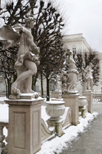

Salzburg
Salzburg is located in Northwest Austria along the banks of the River Salzach.
It is best known as the birthplace of Mozart. For this reason, we are visiting Mozart's birthplace as part of our tour as well as the numerous picturesque gardens and squares located throughout the city. As well as the tours listed below, you will be invited to a number of other tours and events upon your arrival in Austria. The following tours are included in your package:Add text about Salzburg. List of things to do below:
- Dürrnberg Salt Mines
- Hohensalzburg Fortress
- Mozart's Birthplace
- Mirabell Gardens
Mirabell Gardens
